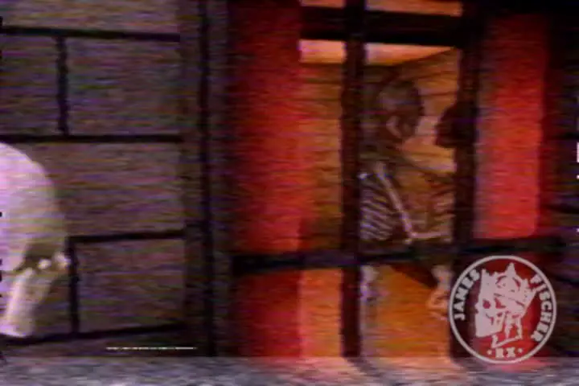
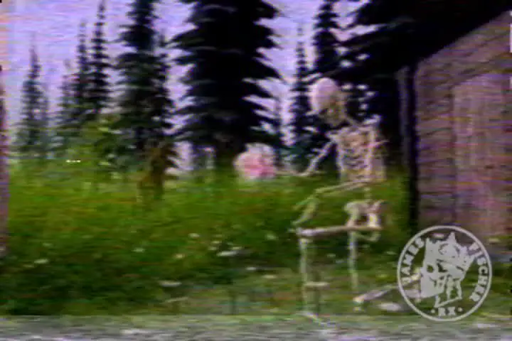

BetterLuckNextTime
BetterLuckNextTime is visual direction for Skull World, a game I’m building.
It is separate from the VHS render pipeline. The picture is procedural Blender Python, rendered in Cycles on my laptop as a low-sample preview. No AI or ComfyUI was used in it.
The scene
The models are original procedural work in Blender Python. The skeleton and a deer are signed-distance forms, meshed with marching cubes. The skeleton is anatomical: a skull and jaw, a spine, curved ribs, and arms and legs that bend. The deer is a white-tailed deer in an alert, head-up pose, with a hair particle system for the fur.
The yard is built in the same script. Particle grass, about 32,000 blades plus a dry-grass system, instanced daisies, procedural pines, and a wooden cottage with a warm interior and a red-lit window. He carries a flower, and the petals can come off.
Animation
The motion is custom Python, authored at 24 frames per second. It is not a stock walk cycle. The legs use a custom two-bone IK solver on planted footsteps: hip to ankle, with a pole vector and a blend into the kneel.
He is already walking through the pine yard with the flower. He slows, turns toward the cabin, and looks through the window. Inside, two skeletons kiss. He pulls away, turns, steps back, and kneels. The petals are already in the air, and his palm opens to them.


The window
The push into the window is a scripted dolly in the 3D scene, with a lens change on a 36 mm sensor. The walk holds 28 mm. The approach eases toward 30 mm. The push-in is about 31 mm, and the hold on the glass is 32 mm. After that the camera pulls back and drops to a low angle beside him.
Render
Rendered in Cycles on my laptop’s RTX 3080, as a low-sample preview. The animation is sampled at 24 fps so the motion and the camera can be finer than the file. This cut keeps every second frame: 12 fps, 288 frames, 720×480, 24 seconds. After the frames, the picture goes through my in-house VHS filter.
The King’s Coin, a crowned skull with my name on the rim, is a fixed corner mark. On this cut it goes on once after the VHS pass, slightly softened.
Music
The music is Quiet at the Glass, an original synth piece synthesized in numpy. No samples. It is in B minor at 60 BPM, written to this cut’s timing, so it muxes on without trimming. There is no voice.